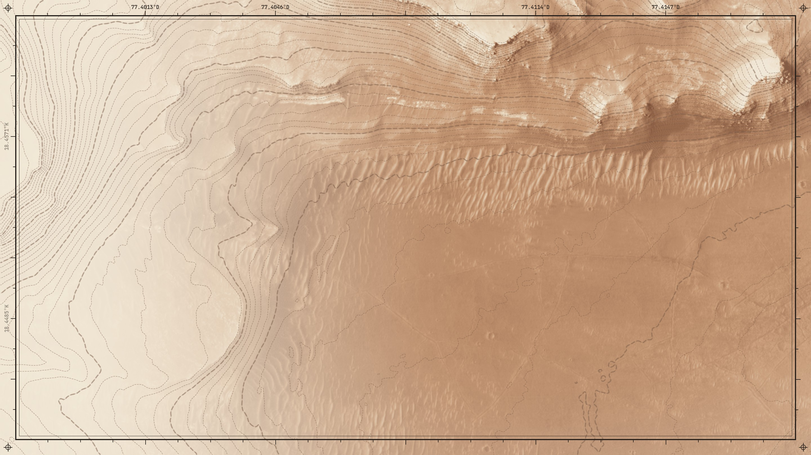
LEVHA 01 · KAPAK
NASA SPACE APPS 2026 · INTERPLANETARY SURVIVAL GUIDE
MARS · JEZERO KRATERİ · THREE FORKS · 18.45°K 77.41°D
Martian
Map
Mars astronotu için yüzey yürüyüşü atlası. Harita girdi, karar çıktı.
GO
CAUTION
NO-GO
LEVHA KÜNYESİ
Sahne
1.2 × 1.2 km
Izgara
1 m · 1 440 000 hücre
Eşyükselti
2 m ara · 10 m ana
Zemin
HiRISE 25 cm
Yükseklik
USGS 1 m DTM
Zemin: HiRISE ortofoto, NASA/JPL-Caltech/UArizona · Eşyükselti eğrileri: USGS Astrogeology 1 m arazi modeli
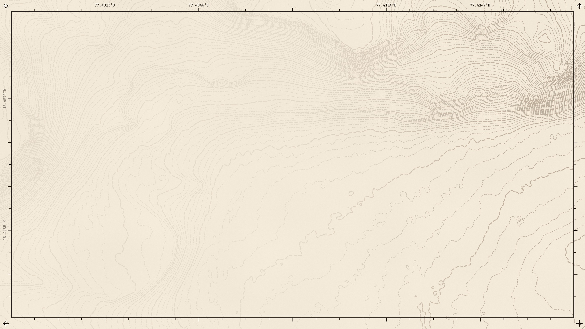
LEVHA 02 · PROBLEM
ÖLÇEK BOŞLUĞU
2 km
Gezegenin haritası var. Astronotun önündeki iki kilometrenin haritası yok.
MOLA 463 m
rakipler 20–40 m
ızgaramız 1 m
HiRISE 25 cm
1 km
100 m
10 m
1 m
◀ astronotun karar verdiği ölçek ▶
ÇIKIŞ ÖNCESİ KONTROL LİSTESİ · BUGÜNKÜ ARAÇLARLA
Ölçek. Haritalar küresel; rakip projeler 20 ile 40 metrelik arazi modeli kullanıyor. Kayalar ve basamaklar görünmüyor.
İnsan. Planlama araçları tekerlek için. Oksijen, soğutma, yorgunluk ve geri yürüme sınırı hiçbirinde yok.
Karar. Katmanlı harita bir girdidir. Astronotun ihtiyacı çıktı: çık ya da çıkma, hangi yoldan, ne kadar marjla.
Üç kutu da boş. Bu listeyle kimse dışarı çıkmaz.
Space Apps 2026 görev metni · rakip açık depoların incelemesi · MOLA MEGDR 128 piksel/derece · cetvel logaritmik
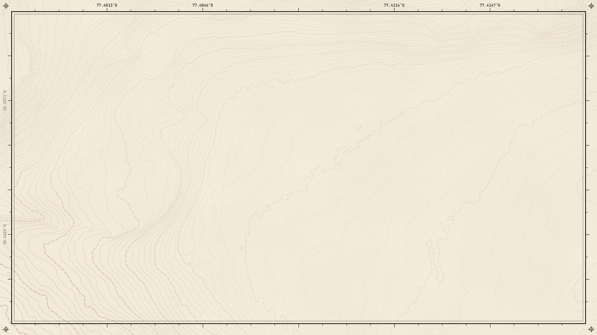
LEVHA 03 · ÇÖZÜM
ÇALIŞAN UYGULAMA · JEZERO
Aynı liste, bu kez dolu.
Ölçek. 1 metrelik ızgara, 1.44 milyon hücre.
İnsan. Oksijen marjı rota boyunca her adımda hesaplanır.
Karar. Her plan üç seviyeden birine düşer ve gerekçesini yazar.
1 m
ızgara aralığı
+429 g
en dar oksijen marjı
3.0 s
plan süresi, tarayıcıda
GO
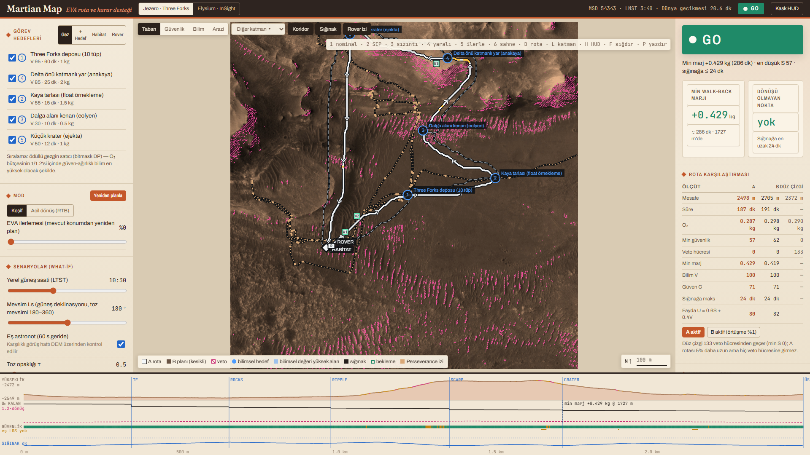
ŞEK. 3.1 · Jezero · Three Forks sahnesi. Solda girdiler, ortada harita, sağda karar, altta rota profili.
Ekran görüntüsü çalışan uygulamadan · nominal senaryo, beş bilim hedefi
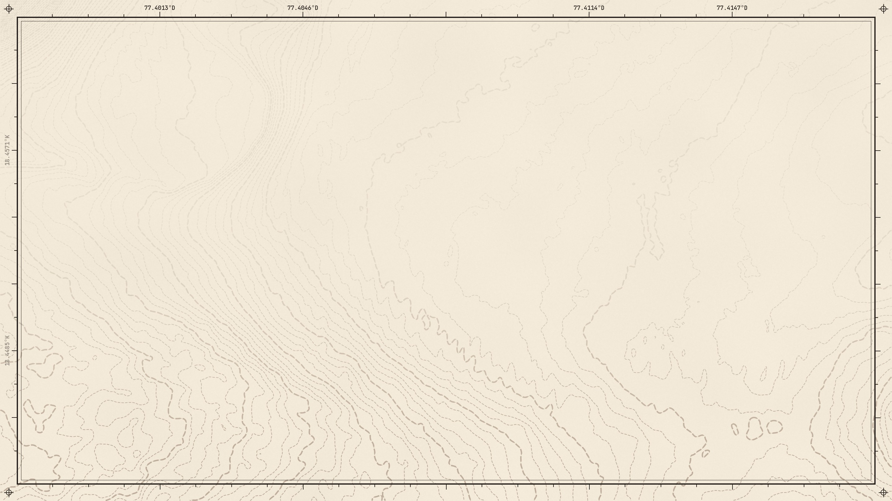
LEVHA 04 · VERİ KATMANLARI
AÇILIMLI GÖRÜNÜŞ · GERÇEK RASTERLER
Beş katman üst üste biner, altından tek bir karar çıkar
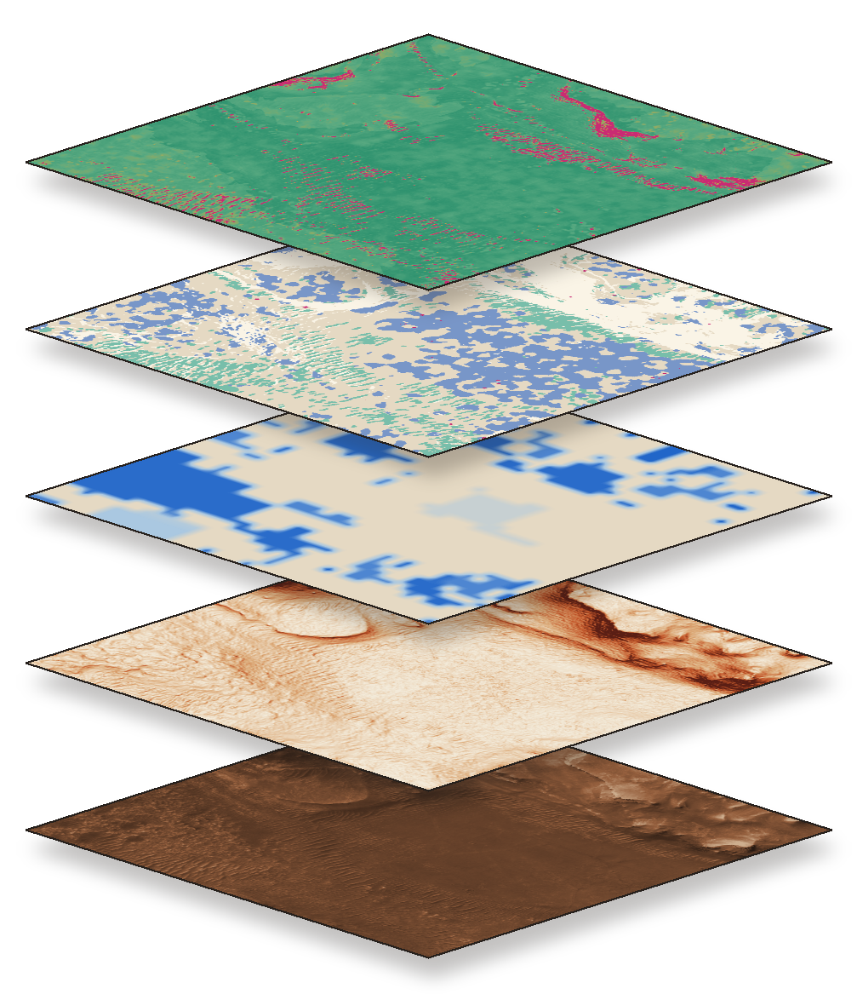
5
GÜVENLİK PUANI
Her hücreye 0 ile 100 arası not. Kaya, eğim, zemin, dönüş oksijeni, radyasyon, ısı.
SONUÇ
4
ARAZİ SINIFI
Görüntü dokusundan: sıkı toprak, anakaya, kayalık, kum dalgası.
TÜRETİLMİŞ
3
SPEKTRAL
CRISM mineral haritası. Kil, karbonat, olivin: hidrasyon ve bilim puanı.
GÖZLENEN
2
TOPOĞRAFYA
USGS 1 metrelik arazi modeli. Eğim, gölge, görüş hattı, ufuk açıları.
GÖZLENEN
1
OPTİK
HiRISE 25 cm ortofoto. Kaya yoğunluğu, kraterler, yüzey dokusu.
GÖZLENEN
＋ YER GERÇEĞİ · Perseverance izi, Navcam kareleri, örnek tüpü koordinatları. Gözlenen.
＋ ATMOSFER · MEDA tipi sıcaklık eğrisi, toz şeytanı penceresi, RAD taban dozu. Modellenmiş.
HiRISE: NASA/JPL-Caltech/UArizona · DTM: USGS Astrogeology · CRISM: Parente, Itoh, Saranathan (Zenodo 5575824) · her katman arayüzde kökenini taşır
LEVHA 05 · SAHNE ANALİZİ
JEZERO · THREE FORKS · 1.2 × 1.2 KM
Sahnenin sayısal portresi: 1.44 milyon hücre
94 m
yükseklik farkı, sahne içinde
4°
ortanca eğim · %90'ı 14° altında
%7
ortanca kaya bolluğu · %90'ı %13 altında
%4.8
geçilmez hücre (veto)
%26
habitatla görüş hattı yok
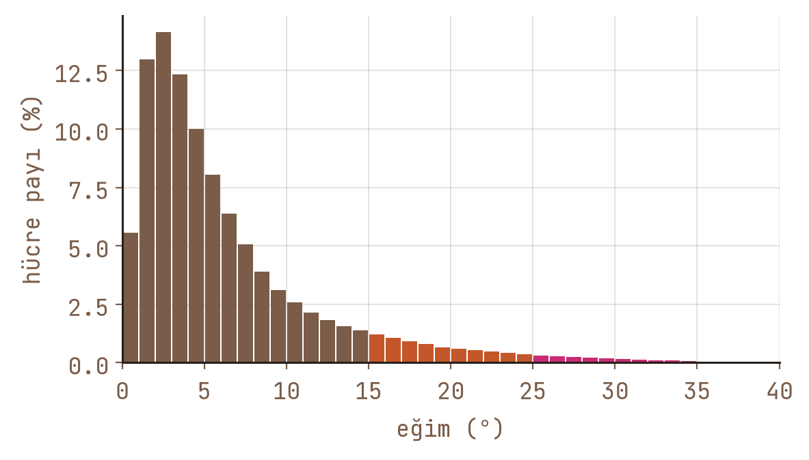
ŞEK. 5.1 · Eğim. Turuncu 15° üstü, magenta 25° üstü: veto.
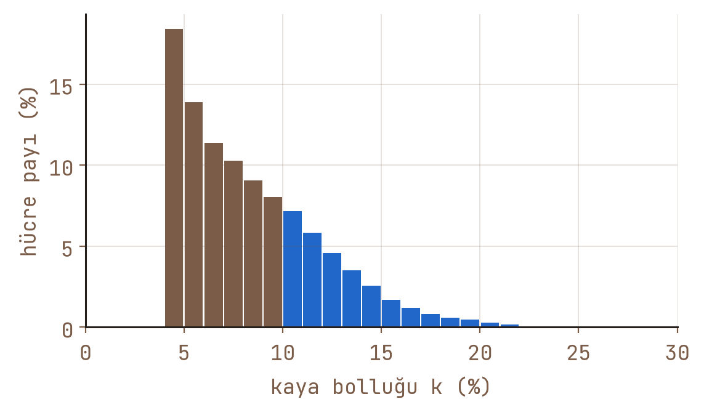
ŞEK. 5.2 · Kaya bolluğu. Mavi %10 üstü: bilim için ilginç, yürüyüş için yavaş.
ARAZİ SINIFI · HÜCRE PAYI
Sıkı toprak
%41.8
Anakaya
%24.2
Kayalık
%23.1
Kum dalgası
%10.8
KARAR HARİTASI · HÜCRE PAYI
Geçilir
%86.0
Dikkat
%9.1
Veto
%4.8
Okuma: sahnenin büyük kısmı yürünebilir. Tehlike iki yerde toplanıyor: delta önü yarında eğim, ovada kum dalgası kuşağı.
Tüm sayılar projenin sahne rasterlerinden hesaplandı: sunum/make_atlas.py · eğim USGS 1 m DTM'den · kaya bolluğu HiRISE'tan türetildi
LEVHA 06 · HIRISE ANALİZİ
UYDU GÖRÜNTÜSÜ VERİ OLARAK
Tek sahne, üç bakış
Aynı görüntü soldan sağa işleniyor: önce fotoğraf, sonra arazi, sonra tehlike.
KAYA MI, KRATER Mİ
Güneş batıdan. Parlak yüz ve doğusunda gölge: kaya. Karanlık duvar ve doğusunda parlak duvar: krater.
KUM DALGASI
Yönlü doku. Spirit'in saplandığı zemin türü; maliyeti yüksek, sıkı olanı yasak.


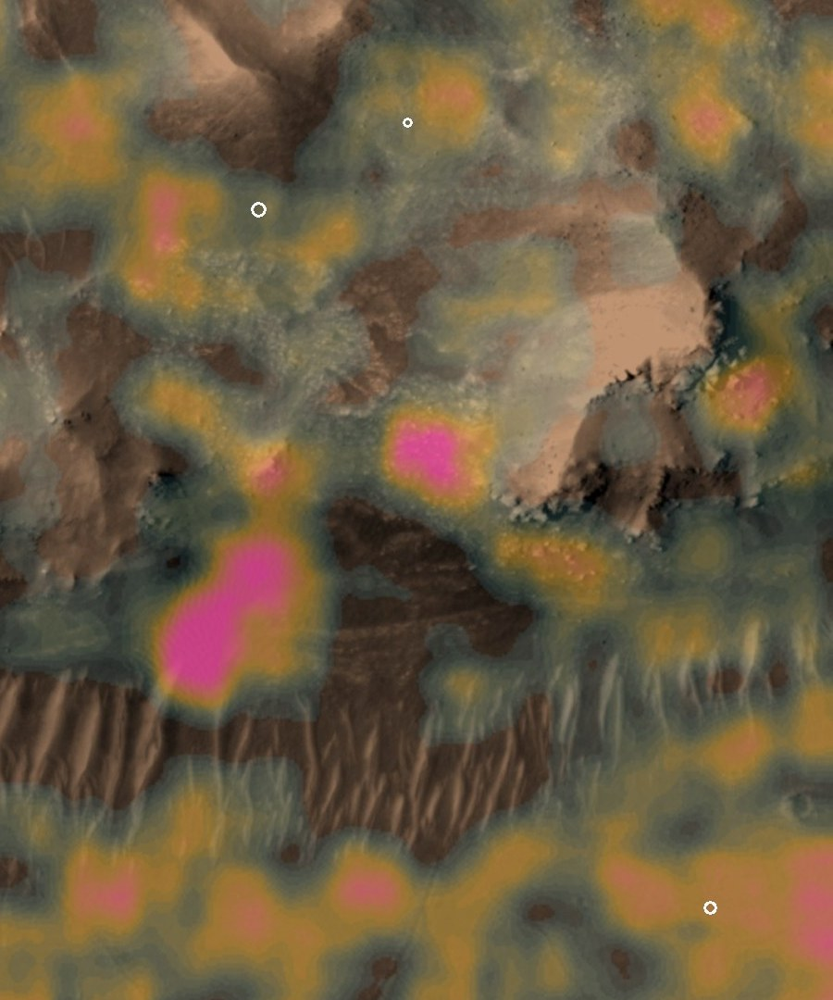
1 · FOTOĞRAF
25 cm/piksel ham görüntü
2 · ARAZİ
beyaz anakaya, mavi kayalık, yeşil kum
3 · TEHLİKE
kaya bolluğu: siyan az, magenta çok
HiRISE: NASA/JPL-Caltech/UArizona · Jezero sahnesi: sıkı toprak %42 · anakaya %24 · kayalık %23 · kum dalgası %11
LEVHA 07 · ÖLÇEK CETVELİ
ÇİZİM ÖLÇEKLİ · 1 M = 380 PİKSEL
Uydu büyük kayayı görür. Astronotu küçük kaya düşürür.
TAKILMA BANDI 10–30 cm · görüntüde yok
10 cm
bot 30 cm
30 cm
1 piksel 25 cm
1 m
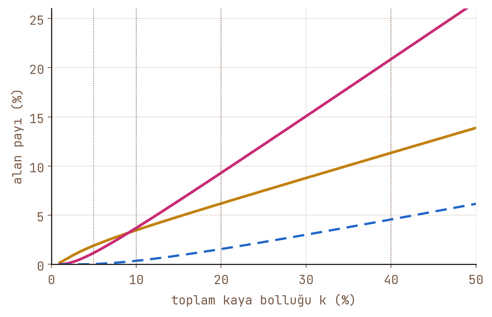
ŞEK. 7.1 · Golombek modeli. Sarı 10–30 cm · magenta 30 cm üstü · mavi kesikli 1 m üstü: uydunun gördüğü.
GÖRÜNEN
HiRISE yaklaşık 1 metreden büyük kayaları çözer.
KÖPRÜ
Model, büyük kaya sayısından küçüklerin kapladığı alanı verir.
KALİBRASYON
InSight %1.5–5 ölçülmüş. Jezero %5–25 varsayım.
Golombek ve Rapp 1997, JGR 102 · Golombek ve diğ. 2020, Nature Communications · F(D) = k·exp(−q·D), q = 1.79 + 0.152/k
LEVHA 08 · PERSEVERANCE YER GERÇEĞİ
NAVCAM · SOL 409–707
Varınca ne göreceğim? Rover tam oradan çekti.
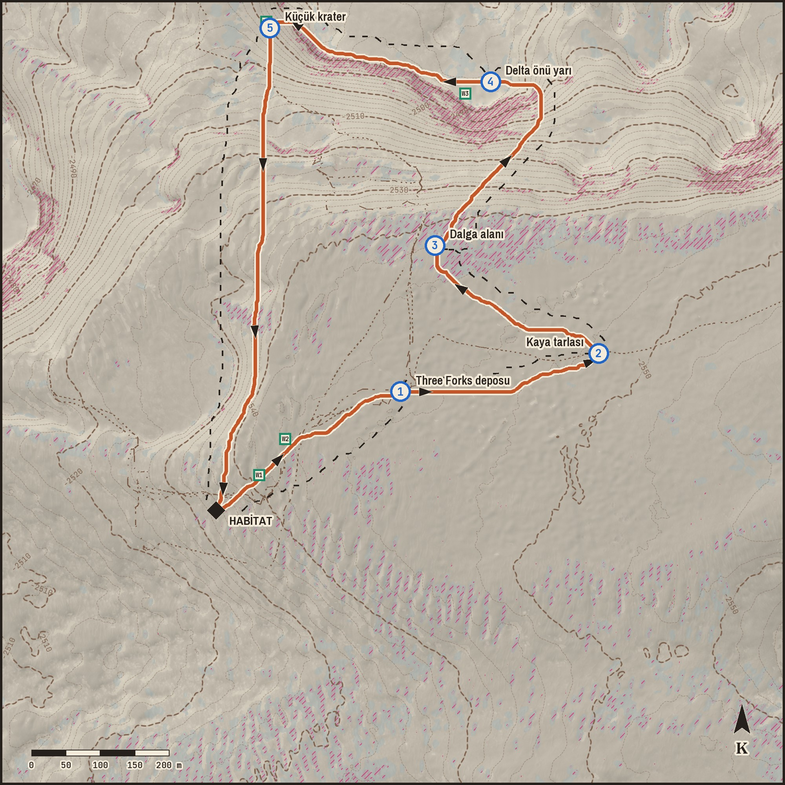
ŞEK. 8.1 · Numaralar bilim hedefleri; ince kesikli iz Perseverance'ın gerçek yolu, 128 yol noktası.

1
Three Forks deposu · sol 663

2
Kaya tarlası · sol 409
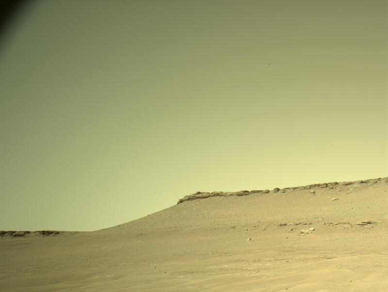
3
Dalga alanı · sol 538

4
Delta önü yarı · sol 707
Hedefe tıklayınca en yakın yol noktasından çekilmiş ham Navcam kareleri açılır. Kask görünümünde arka plan olur.
Görüntüler ve yol noktaları: NASA/JPL-Caltech (Mars 2020 Navcam, MMGIS) · her hedef en yakın yol noktasına bağlandı
LEVHA 09 · KENDİ KENDİMİZİ SINADIK
YÖRÜNGE TAHMİNİ ↔ YER GÖZLEMİ
Yörünge tahmini yerden görünenle uyuşuyor mu?
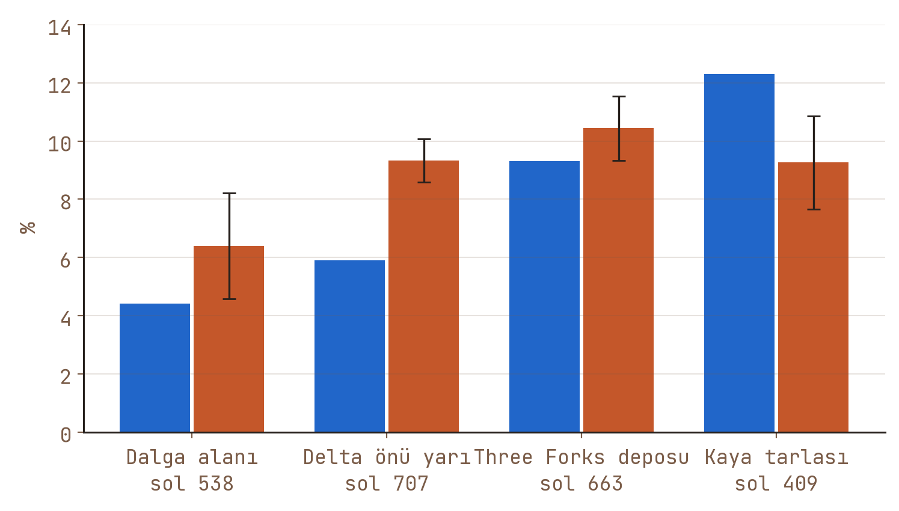
uydudan kaya bolluğu k
Navcam yakın zemin doku göstergesi ± sapma
3/4
GÖSTERGE · KANIT DEĞİL
Dört noktanın üçünde sıralama aynı. Kaya tarlasında uydu yerden yüksek okuyor.
| NOKTA | UYDU % | YER % |
|---|---|---|
| Dalga alanı | 4.4 | 6.4 |
| Delta önü yarı | 5.9 | 9.3 |
| Three Forks deposu | 9.3 | 10.4 |
| Kaya tarlası | 12.3 | 9.3 |
Pearson r = 0.64, n = 4. Yöntem 128 yol noktasına ölçeklenebilir.
Navcam: sol 538, 707, 663, 409 · her noktada 2 ile 4 kare · yer göstergesi: yakın zeminde kaya yüzü ve gölge piksellerinin payı
LEVHA 10 · HÜCRE PUANLARI
AĞIRLIKLAR · TOPLAM 100
Her metrekarenin üç notu var
GÜVENLİK
Buradan geçmek ne kadar riskli? Dördüncü terim: bu hücreden eve dönmenin oksijen bedeli.
BİLİM
Burada durmaya değer mi? Yerinde kaya en değerli: Perseverance'ın 30 örneğinin 27'si kaya karotu.
GÜVEN
Bu notlara ne kadar inanmalı? Toplama karışmaz; 65'in altında sistem kendisi uyarır.
Veto. Eğim 25 derecenin, kaya %40'ın üstündeyse ya da zemin tehlike eşiğini aşıyorsa hücre duvardır. Bilim notu ne olursa olsun geçilmez.
ÖNCELİK SIRASI
1
Veto · pazarlık yok
2
Güvenlik · ağırlık 70
3
Bilim · ağırlık 30
ÖRNEK · ROTA A
Güvenlik ortalaması
66
Bilim, 5 hedefin 5'i
100
Veri güveni
71
Rota puanı
80 · GO
Ağırlıkların yapısı Apollo ve BASALT saha kurallarından · sayılar ayarlanabilir politika, arayüzde kaydırıcı · tek kaynak: engine/config.ts
LEVHA 11 · ROTA MOTORU
KURAL TABANLI · DİL MODELİ YOK
Tek çizgi değil: beş adımda bir plan
1
Sıra. Oksijen ve süre bütçesi içinde en yüksek bilim. Sığmayan hedef gerekçesiyle atlanır.
2
Rota A. Yasak hücrelere girmeden en düşük maliyetli yol.
3
B planı. A'nın en zayıf noktası kapatılır, başka bir yol aranır.
4
Koridor. Çizgi değil şerit; konum belirsizliği kadar genişler.
5
Sığınak. Habitat ve rover; her noktadan kaç dakika.
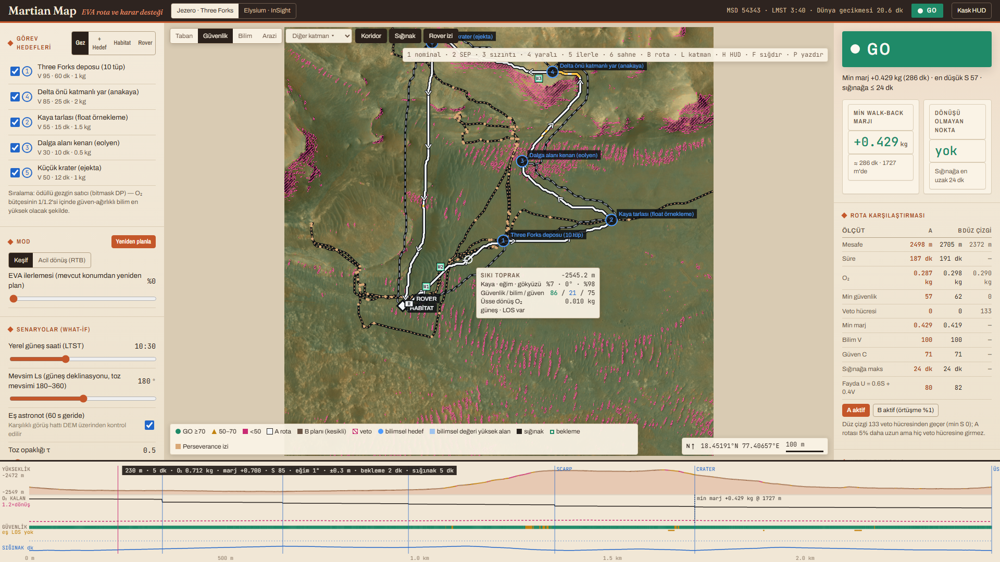
ŞEK. 11.1 · Güvenlik katmanı açık. Beyaz: rota A. Kesikli: B planı. Magenta tarama: yasak.
Sıralama: bütçeli orienteering, kaba ızgarada · yol: A* tam çözünürlükte · dönüş alanı: ters Dijkstra · aynı girdi, aynı rota
LEVHA 12 · ROTA HARİTASI
EVA-01 · NOMİNAL SENARYO · ÖLÇEK ÇUBUĞU HARİTADA
Rota A, levha üzerinde
Rota A · 2498 m
B planı · 2704 m
Perseverance izi
Yasak hücre (veto)
Bilim hedefi, ziyaret sırası
Bekleme noktası W1–W3
Habitat: çıkış ve dönüş
Eşyükselti 2 m · kalın 10 m
| BACAK | M | DK | O₂ G |
|---|---|---|---|
| Habitat → 1 Three Forks deposu | 345 | 67 | 103 |
| → 2 Kaya tarlası | 313 | 22 | 35 |
| → 3 Dalga alanı | 326 | 18 | 29 |
| → 4 Delta önü yarı | 380 | 41 | 60 |
| → 5 Küçük krater | 363 | 21 | 32 |
| → Habitat | 770 | 18 | 29 |
| Toplam | 2498 | 187 | 287 |
Süre ve oksijen, varılan hedefteki çalışmayı da içerir. Tank 720 g.
Kabartma ve eğriler: USGS 1 m DTM · zemin tonu: HiRISE · rota, hedefler ve yasak hücreler: motor çıktısı (sunum/make_atlas.py)
LEVHA 13 · ROTA KESİTİ
HABİTAT → 5 HEDEF → HABİTAT · 2498 M
Rota boyunca kesit: yükseklik, eğim, sığınağa süre
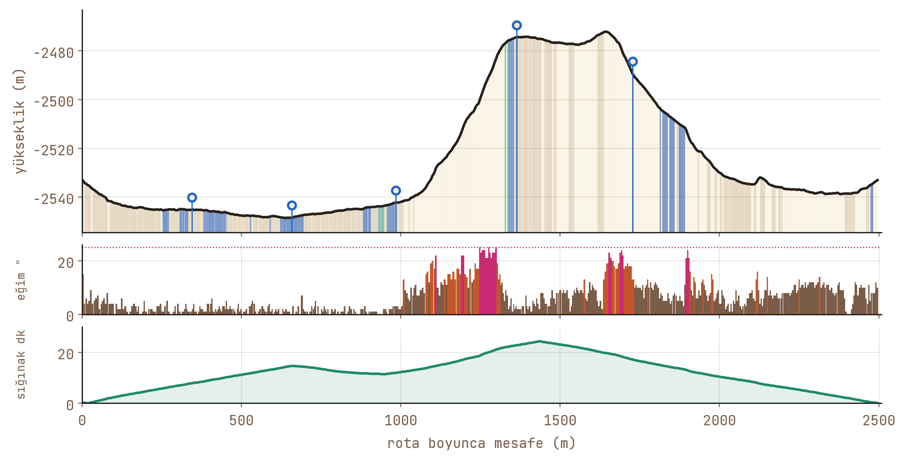
sıkı toprak
anakaya
kayalık
bilim hedefi
eğim 20° üstü
TIRMANIŞ
95 m
toplam çıkış. Asıl yük 1.0 ile 1.35 km arasında: delta önü yarı.
EN DİK ADIM · 1248 M
25°
veto eşiğinin tam sınırı. Rota yarın en yumuşak geçidini buluyor.
SIĞINAĞA EN UZAK AN
24 dk
1435. metrede, yarın tepesinde.
Motor çıktısından örneklenmiş rota noktaları · yükseklik USGS 1 m DTM · sığınak: habitat ya da basınçlı rover
LEVHA 14 · DÜZ ÇİZGİYE KARŞI
AYNI HEDEFLER · AYNI MALİYET MODELİ
DÜZ ÇİZGİ
131
yasak hücreden geçer
Kum dalgaları ve dik yamaçlar. En düşük güvenlik puanı 0.
MARTIAN MAP ROTASI
0
yasak hücre. Bedeli: yüzde 5 daha uzun yol.
En düşük güvenlik puanı 57. B planında 62.
DÜZ ÇİZGİ
2372 m · 290 g O₂
ROTA A
2498 m · 287 g
B PLANI
2704 m · 298 g
Jezero · Three Forks, beş hedef, nominal senaryo · çubuk uzunlukları mesafeyle orantılı
LEVHA 15 · WALK-BACK KURALI
OKSİJEN TANKI 720 G
Her adımda aynı soru: buradan eve dönebilir miyim?
Kural: kalan oksijen, o noktadan dönüş için gerekenin 1.2 katından az olamaz.
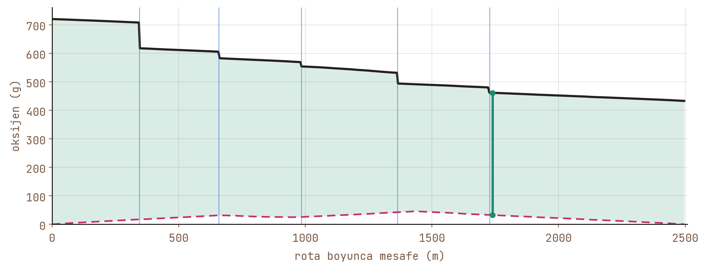
kalan oksijen
dönüş için gereken × 1.2
marj
hedefler
EN DAR MARJ · 1727 M
+429 g
Nominal tüketimle yaklaşık 286 dakika.
KESİŞİRSE
İki çizginin değdiği yer haritada dönüşü olmayan nokta olur; karar NO-GO.
33 g O₂/km düz zeminde (Apollo walk-back varsayımı) · yokuş çarpanı 1 + 3.5·tanθ (Minetti 2002, 0.38 g ölçeği)
LEVHA 16 · EVA SAAT PENCERESİ
YEREL GÜNEŞ SAATİ · YARIM SAATLİK ADIM
Ne zaman çıkmalı? 07:30, toz şeytanlarından önce.
ÖNERİLEN EVA · 07:30 → 10:36
TOZ ŞEYTANI TEPESİ
06:00
09:00
12:00
15:00
18:00
SABAH ERKEN, AKŞAM
Soğuk ve alçak güneş: uzun gölgeler.
11 İLE 14 ARASI
Toz şeytanı tepesi (MEDA). Puan 60'a düşer.
NEDEN 14:00 DEĞİL
Puan yüksek ama yürüyüş gün batımına 2 saat kala bitmeli.
DÜNYA GECİKMESİ
Bugün 20.6 dk. Plan araçta olmalı.
Çubuk yüksekliği o başlangıç saatinin uygunluk puanı (0–100) · sıcaklık ve güneş geometrisi modellenmiş · toz şeytanı saatleri: MEDA gözlemleri
LEVHA 17 · OLAY ANINDA YENİDEN PLAN
ASTRONOT ROTANIN %45'İNDE
Yürüyüşün ortasında bir şey ters giderse
GİYSİ SIZINTISI · TÜKETİM ×3
Marj 286 dakikadan 208'e iner. Kalan iki hedef hâlâ güvenli.
EŞ YARALANDI · HIZ ×0.5
Kalan süre 73 dakikadan 107'ye çıkar; plan bunu baştan hesaplar.
TOZ FIRTINASI · τ = 4
Hız düşer; saklanılacak yerler haritada kırmızıya döner.
GÜNEŞ FIRTINASI
Bilim iptal. En yakın basınçlı sığınağa 710 m, 17 dakika ve geri sayım.

ŞEK. 17.1 · Güneş fırtınası anı: 3 hedef tamam, harcanan oksijen ve süre devredildi, sığınaklar kırmızı.
Dört senaryo da aynı noktadan, rotanın %45'inden yeniden planlandı · sayılar motor çıktısı
LEVHA 18 · VİZÖRÜN İÇİNDEN
ÜÇ GÖRÜNÜM · TEK PLAN
Aynı plan, üç yerde: habitat ekranı, kask vizörü, bilek
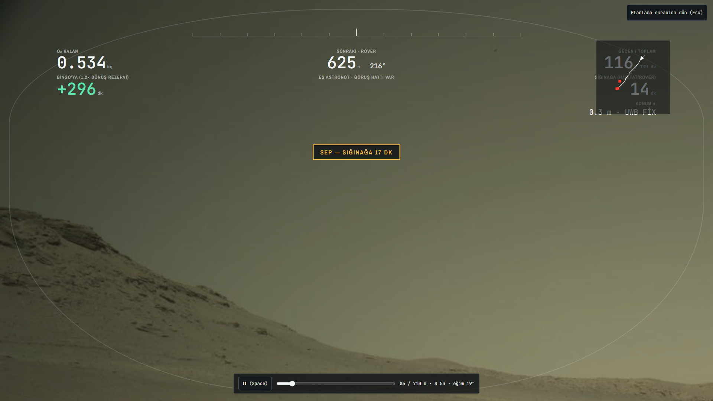
ŞEK. 18.1 · Kask görünümü, güneş fırtınası anı. Arka plan o noktadan çekilmiş gerçek Navcam karesi.
HABİTAT EKRANI
Hedefler, senaryolar, rota karşılaştırması.
KASK VİZÖRÜ · BU GÖRÜNTÜ
Oksijen marjı dakika olarak, sonraki hedefin yönü, sığınağa süre. Tek bakışta okunur.
BİLEK LİSTESİ
Yazdırılabilir tek sayfa: bacaklar, kurallar, dönüşü olmayan nokta.
Eldivenle dokunmatik ekran olmaz: vizörde yalnız üç sayı var.
Uygulamada H tuşu kask görünümünü, P tuşu yazdırılabilir bilek listesini açar · arka plan: NASA/JPL-Caltech Navcam
LEVHA 19 · BAŞKA BİR YER
ELYSIUM PLANITIA · INSIGHT İNİŞ YERİ
Aynı motor, ekibin kendi fotoğrafı
InSight iniş yeri. 0.29 m/piksel, 325 × 287 metre. Tek komutla yeni sahne.
CAUTION
Burada arazi modeli yok. Sistem bunu saklamıyor: veri güveni 56, eşik 65. Rota çiziliyor ama karar "dikkat".
Sıkı toprak payı
%97
Kaya bolluğu
%1.5–5
Golombek 2020 yüzey sayımı
uyumlu

ŞEK. 19.1 · Aynı arayüz, aynı kurallar. Üs: InSight iniş aracı.
PIA26515, HiRISE, 23 Ekim 2024 · NASA/JPL-Caltech/UArizona · sahne üretimi: pipeline/build_scene.py insight
LEVHA 20 · DÜRÜSTLÜK CETVELİ
ÖLÇÜLEN ◀──▶ VARSAYILAN
Ne ölçtük, ne varsaydık: tek çizgide
◀ ÖLÇTÜK
VARSAYDIK ▶
Eğim, gölge, görüş hattı
USGS 1 m arazi modelinden doğrudan.
Mineral ve hidrasyon
CRISM; kaba çözünürlük ama ölçülmüş.
Arazi sınıfı, kaya dağılımı
Görüntü dokusundan türetildi; göreli dağılım güvenilir.
Bekleme noktaları
Radyasyonu yalnız %3 ile %8 düşürür; gerçek sığınak habitat ve rover.
Sıcaklık, güneş
MEDA tipi günlük eğri; model.
Jezero kaya ölçeği
%5 ile %25; yayınlanmış sayım yok.
Güvenlik 70, bilim 30
Politika; arayüzde kaydırıcı.
Yapay zekâ beyanı. Rota kararını veren kısımda dil modeli yok. Yapay zekâ araştırma sentezinde, kod yazımında ve raporlamada kullanıldı.
Her katmanın kökeni arayüzde de etiketlidir: gözlenen · türetilmiş · modellenmiş · varsayım
LEVHA 21 · MAKİNE DAİRESİ
TARAYICIDA · SUNUCUSUZ · ÇEVRİMDIŞI
3.0 s
1.44 milyon hücre, tarayıcıda, sunucusuz
İlk sürüm 9.7 saniyeydi. Rota sonucu değişmeden üçte birine indi.
ALANLAR
0.67 s
SIRALAMA
0.53 s
ROTA A
0.88 s
B PLANI
0.68 s
PLAN SÜRESİ · JEZERO SAHNESİ
9.7 s · ilk sürüm
5.1 s · önbellek, kovalı kuyruk
3.0 s · kaba ızgarada sıralama
2.0 s · senaryo değişince
ÇEVRİMDIŞI
Mars'ta Dünya bağlantısı yok; her şey araçta çalışır.
TEKRARLANABİLİR
Aynı girdi, aynı rota. Karar günlüğü her adımı yazar.
AÇIK HAT
Python sahne üretimi, TypeScript motor. Yeni sahne tek komut.
Ölçüm: gerçek Jezero verisiyle Node karşılaştırma testi · aşama süreleri soğuk çalıştırmadan · Vite, React, TypeScript, Web Worker
LEVHA 22 · HABİTATA DÖNÜŞ
MARTIAN MAP · NASA SPACE APPS 2026
Harita girdi.
Karar çıktı.
Astronot eve dönebileceğini, çıkmadan önce bilir.
BUGÜN ÇALIŞAN
İki gerçek sahne, beş veri katmanı, rota ve B planı, oksijen marjı, saat penceresi, dört olay, üç görünüm.
SIRADAKİ
InSight için gerçek arazi modeli, 128 yol noktasıyla tam doğrulama, gerçek MEDA sıcaklık verisi.
ŞİMDİ CANLI
1 nominal · 5 yürüyüşün ortası · 3 sızıntı · 2 güneş fırtınası · H vizör · 6 ikinci sahne
Kaynak kod, sahne üretim hattı ve bu sunum: github.com/farukhv/nasa